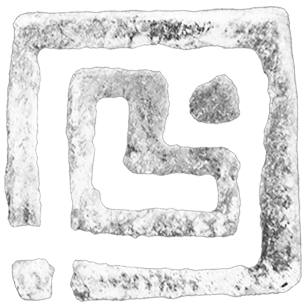
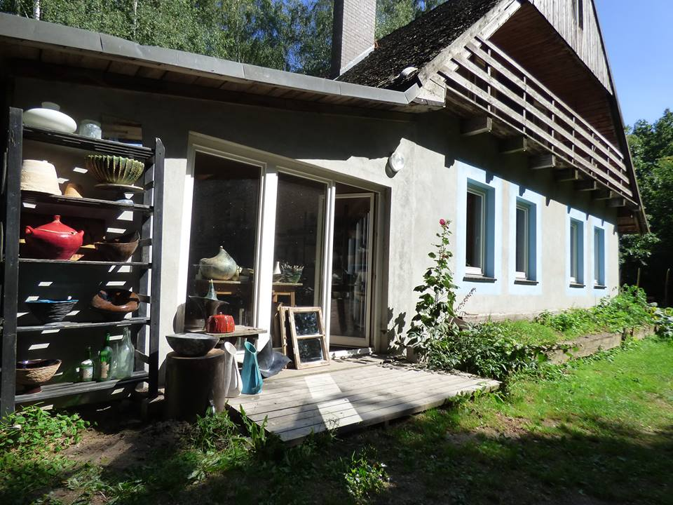

URSA CERAMIKA
Z gliny powstaje...
Glina pozwala się kształtować, poddaje się naszej wyobraźni.
Ogień przeobraża ją nieodwracalnie, nic już nie można zmienić. Ten moment najbardziej mnie fascynuje w ceramice.
Przechodzenie przez ogień

Pracownia Ursa powstała przy domu, w którym mieszkam, w Pruszowicach.
Duży, zielony teren pozwala na wypały na zewnątrz: raku, tzw. wypał neolityczny oraz wypał w piecu na drewno.


Kontakt
E-mail: bugajewska@gmail.com
Telefon: +48 693 351 830
Adres: Łozińska 8, 51-217 Pruszowice, Polska